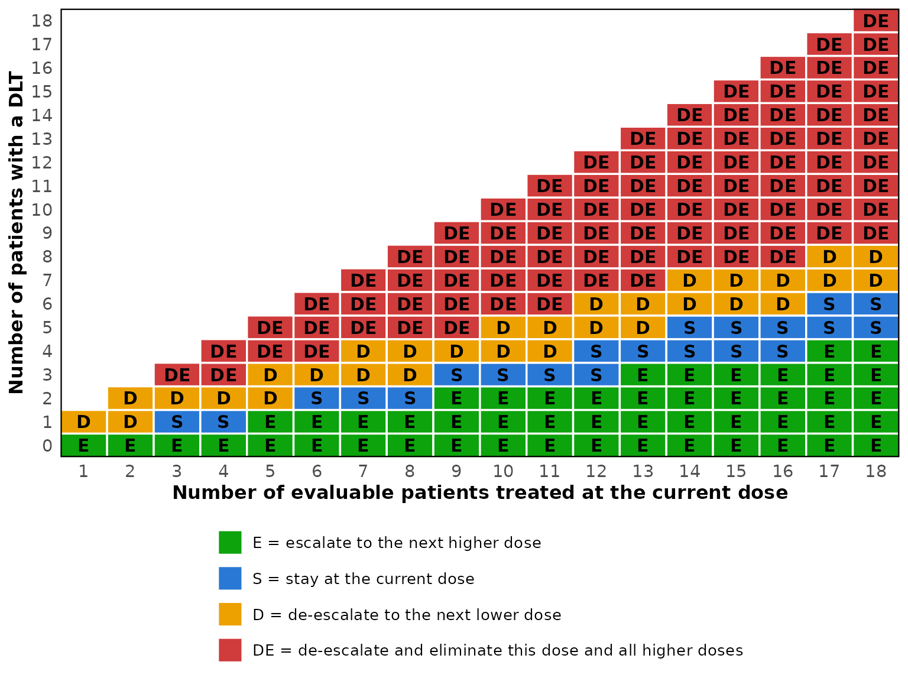
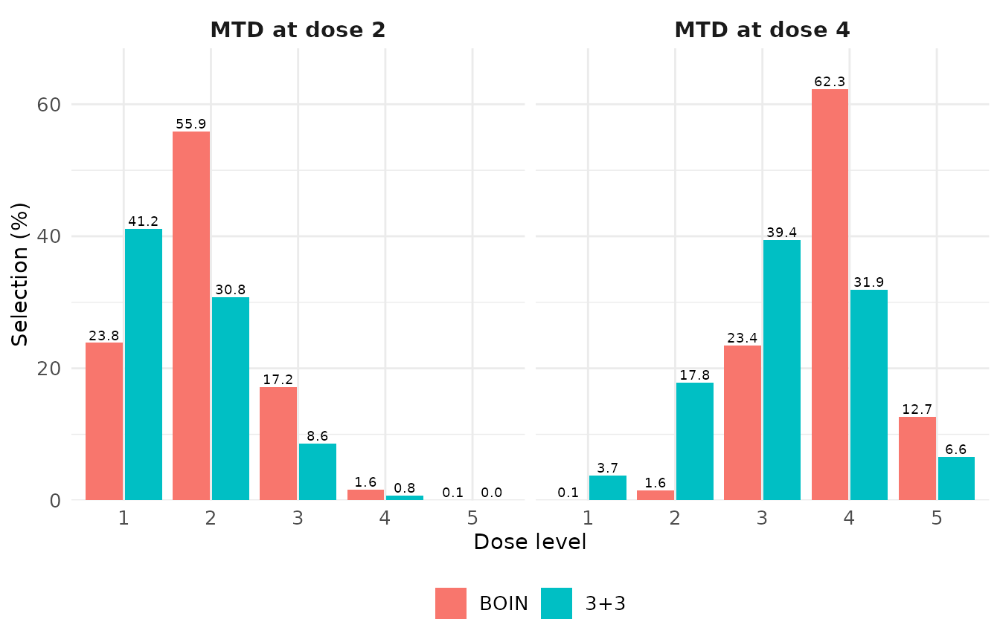
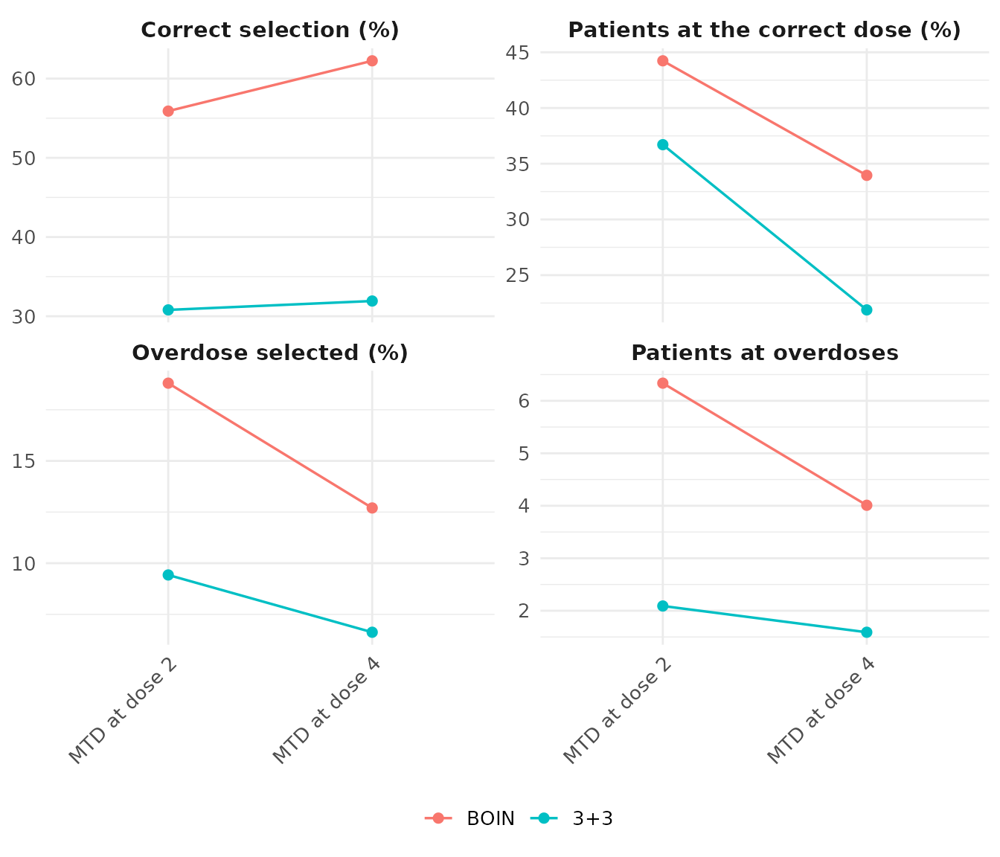

Getting started with simFastBOIN
Source:vignettes/simFastBOIN-introduction.Rmd
simFastBOIN-introduction.RmdWhat the package does
The Bayesian optimal interval (BOIN) design assigns a cohort of patients to a dose, counts how many experienced a dose-limiting toxicity, and compares the observed rate against two boundaries. If the rate is at or below the lower boundary the next cohort is escalated, if it reaches the upper boundary the next cohort is de-escalated, and otherwise the dose is repeated. The rule is as simple to run as a 3+3 design, and Liu and Yuan report average performance comparable to that of the continual reassessment method.
This package provides the boundaries, a fast simulation engine for
operating characteristics, and the MTD selection rule applied at the end
of a trial. The traditional 3+3 design is included as a comparator, so
the two can be tabulated side by side. For toxicity that appears late in
the assessment window, the time-to-event version of the design has a
vignette of its own, vignette("simFastBOIN-tite"), and so
do the designs that backfill patients to lower doses while the
escalation waits, vignette("simFastBOIN-backfill"), and the
designs for trials of two drugs given together, which look for one MTD
combination or for the MTD contour,
vignette("simFastBOIN-combination"). The designs that look
for the optimal biological dose, which weighs the response against the
toxicity, are described in vignette("simFastBOIN-boin-et")
(BOIN-ET, its time-to-event and backfill versions, gBOIN-ET and
TITE-gBOIN-ET for graded outcomes and BOIN-ETC for two drugs) and
vignette("simFastBOIN-boin12") (BOIN12, TITE-BOIN12,
Comb-BOIN12, TITE-Comb-BOIN12 and U-BOIN). Two extensions of the design
itself are described below: iBOIN, which brings prior information on the
DLT rates into the boundaries, and gBOIN, which decides from toxicity
grades. The functions of the section “Tables and figures” below set the
results of these designs side by side, all but the waterfall design,
which selects several combinations in a trial.
Decision boundaries
boin_lambda() returns the two interval boundaries, which
depend only on the target rate and the two thresholds around it.
boin_lambda(target = 0.30)
#> $lambda_e
#> [1] 0.2364907
#>
#> $lambda_d
#> [1] 0.3585195In practice the boundaries are used as whole numbers of toxicities.
boin_boundary() tabulates them, together with the
elimination boundary, for every attainable sample size at a dose.
bd <- boin_boundary(target = 0.30, max_n = 18, extrasafe = TRUE)
print(bd, cohort_size = 3)
#> BOIN decision boundaries
#> target DLT rate : 0.3
#> p_saf / p_tox : 0.18 / 0.42
#> lambda_e : 0.2365
#> lambda_d : 0.3585
#> cutoff_eli : 0.95
#> safety cutoff : 0.9
#>
#>
#> Number of patients treated 3 6 9 12 15 18
#> Escalate if # of DLT <= 0 1 2 2 3 4
#> Deescalate if # of DLT >= 2 3 4 5 6 7
#> Eliminate if # of DLT >= 3 4 5 7 8 9
#> Stop at lowest dose if # of DLT >= 2 4 5 6 7 8Reading the first column: with three patients treated, escalate on zero toxicities, de-escalate on two or more, and stay on exactly one.
The same information can be read as a table indexed by both counts. Printing it with a cohort size shows only the sample sizes that are actually reached.
decisions <- boin_decision_table(target = 0.30, max_n = 18)
print(decisions, cohort_size = 3)
#> Patients
#> DLTs 3 6 9 12 15 18
#> 0 E E E E E E
#> 1 S E E E E E
#> 2 D S E E E E
#> 3 DE D S S E E
#> 4 DE D S S E
#> 5 DE DE D S S
#> 6 DE DE D D S
#> 7 DE DE D D
#> 8 DE DE DE D
#> 9 DE DE DE DE
#> 10 DE DE DE
#> 11 DE DE DE
#> 12 DE DE DE
#> 13 DE DE
#> 14 DE DE
#> 15 DE DE
#> 16 DE
#> 17 DE
#> 18 DE
#>
#> E = escalate, S = stay, D = de-escalate, DE = de-escalate and eliminate this dose and aboveFor a protocol the table is usually easier to read as a picture. Every cell carries its decision letter, so the figure survives grayscale printing.
plot(decisions)
When extrasafe = TRUE there is a second, stricter rule
that applies at the lowest dose only. boin_stopping_table()
lays it out the same way.
boin_stopping_table(bd, cohort_size = 3)
#> 3 6 9 12 15 18
#> Number of evaluable patients treated at the lowest dose level 3 6 9 12 15 18
#> Stop the trial if # of DLT >= 2 4 5 6 7 8Operating characteristics for one scenario
sim_boin() simulates the design many times under an
assumed dose-toxicity curve and summarizes the result.
oc <- sim_boin(
target = 0.30,
p_true = c(0.05, 0.15, 0.30, 0.45, 0.60),
n_cohort = 10,
cohort_size = 3,
n_trials = 2000,
seed = 123
)
oc
#> BOIN operating characteristics
#> target DLT rate : 0.3
#> trials : 2000
#> cohorts : 10 of size 3
#> max sample size : 30
#> lambda_e / _d : 0.2365 / 0.3585
#>
#> DL1 DL2 DL3 DL4 DL5 Total / No MTD
#> True DLT rate (%) 5.0 15.0 30.0 45.0 60.0
#> MTD selected (%) 1.2 25.0 53.1 19.1 1.6 0.0
#> Patients treated 4.1 8.8 10.9 4.5 0.8 29.2
#> Patients with DLT 0.2 1.3 3.3 2.0 0.5 7.4
#>
#> Doses above a true DLT rate of 0.3: DL4, DL5
#> Patients treated there : 18.3%
#> Trials treating any patient there : 55.8%
#> Trials treating over 60% there : 2.1%
#> Trials treating over 80% there : 0%
#> Trials selecting an MTD there : 20.6%The third dose is the true MTD here, and it is the dose selected most often. The components of the result are available individually.
oc$sel_percent
#> DL1 DL2 DL3 DL4 DL5
#> 1.20 24.95 53.15 19.10 1.55
oc$percent_no_mtd
#> [1] 0.05
oc$overdose$pct_patients
#> [1] 18.30761Comparing scenarios
A design is judged across a range of plausible curves rather than
one. sim_boin_multi() runs the same design under several
scenarios and collects the results into one table.
scenarios <- list(
"MTD at dose 2" = c(0.15, 0.30, 0.45, 0.60, 0.75),
"MTD at dose 4" = c(0.02, 0.06, 0.15, 0.30, 0.50),
"All doses toxic" = c(0.40, 0.55, 0.65, 0.75, 0.85)
)
sim_boin_multi(
target = 0.30,
scenarios = scenarios,
n_cohort = 10,
cohort_size = 3,
n_trials = 2000,
seed = 123
)
#> BOIN operating characteristics across 3 scenarios
#> target DLT rate : 0.3
#> trials each : 2000
#> max sample size : 30
#>
#> Scenario Item DL1 DL2 DL3 DL4 DL5 Total / No MTD
#> MTD at dose 2 True DLT rate (%) 15.0 30.0 45.0 60.0 75.0
#> MTD selected (%) 23.8 55.9 17.2 1.6 0.0 1.5
#> Patients treated 9.1 12.2 5.4 0.9 0.0 27.6
#> Patients with DLT 1.3 3.7 2.5 0.5 0.0 8.1
#> MTD at dose 4 True DLT rate (%) 2.0 6.0 15.0 30.0 50.0
#> MTD selected (%) 0.0 1.6 23.4 62.3 12.7 0.0
#> Patients treated 3.2 4.2 8.2 10.1 4.0 29.8
#> Patients with DLT 0.1 0.3 1.2 3.0 2.1 6.7
#> All doses toxic True DLT rate (%) 40.0 55.0 65.0 75.0 85.0
#> MTD selected (%) 57.3 2.3 0.0 0.0 0.0 40.4
#> Patients treated 13.7 2.9 0.3 0.0 0.0 16.9
#> Patients with DLT 5.5 1.6 0.2 0.0 0.0 7.3Design options
Six options change how the design behaves.
titration = TRUE treats one patient per dose until the
first toxicity, which moves through safe doses quickly.
safe_curve <- c(0.01, 0.02, 0.05, 0.12, 0.30)
plain <- sim_boin(target = 0.30, p_true = safe_curve, n_cohort = 12,
cohort_size = 3, n_trials = 1000, seed = 1)
titrated <- sim_boin(target = 0.30, p_true = safe_curve, n_cohort = 12,
cohort_size = 3, n_trials = 1000, titration = TRUE, seed = 1)
rbind(plain = plain$n_pts_dose, titrated = titrated$n_pts_dose)
#> DL1 DL2 DL3 DL4 DL5
#> plain 3.099 3.285 3.888 8.136 14.976
#> titrated 1.063 1.164 1.736 7.516 15.997titration_doses ends the titration at a given dose: when
no DLT is seen up to it, full cohorts start at the next dose. With
titration_doses = 2 and n_earlystop = 6, which
stops the trial once six patients are at the current dose and the design
would stay, this is the accelerated BOIN design of Kojima, Wende and
Zhao (2024).
standard <- sim_boin(target = 0.30, p_true = safe_curve, n_cohort = 8,
cohort_size = 3, n_trials = 1000, seed = 1)
accelerated <- sim_boin(target = 0.30, p_true = safe_curve, n_cohort = 8,
cohort_size = 3, n_trials = 1000, titration = TRUE,
titration_doses = 2, n_earlystop = 6, seed = 1)
round(rbind(standard = c(standard$sel_percent,
patients = standard$total_n_pts),
accelerated = c(accelerated$sel_percent,
patients = accelerated$total_n_pts)), 1)
#> DL1 DL2 DL3 DL4 DL5 patients
#> standard 0.0 0.0 1.5 27.3 71.2 24.0
#> accelerated 0.1 0.2 2.5 23.4 73.8 16.4With at most 24 patients, the accelerated design treats 16.4 patients
on average against 24 for the standard design.
inst/reproduce/reproduce_Kojima2024.R compares it with
Tables 1 and 2 of the article: 83 of the 84 values of the accelerated
design lie within four standard errors of the published ones.
extrasafe = TRUE adds a stopping rule at the lowest dose
that is easier to trigger than elimination, and
bound_mtd = TRUE refuses to select a dose whose estimated
toxicity exceeds the de-escalation boundary.
toxic_curve <- c(0.35, 0.45, 0.55, 0.65, 0.75)
c(
plain = sim_boin(target = 0.30, p_true = toxic_curve, n_cohort = 12,
cohort_size = 3, n_trials = 1000, seed = 2)$percent_no_mtd,
extrasafe = sim_boin(target = 0.30, p_true = toxic_curve, n_cohort = 12,
cohort_size = 3, n_trials = 1000, extrasafe = TRUE,
seed = 2)$percent_no_mtd
)
#> plain extrasafe
#> 24.5 43.3n_earlystop stops a trial once the current dose has
accrued this many patients and the design would stay there, which is
taken as a sign that the algorithm has settled. It defaults to 18. Note
that the reference implementation in the BOIN package defaults to 100,
which effectively switches the rule off, so a comparison between the two
should set it explicitly.
For some target rates one DLT out of three patients de-escalates the
dose, where the 3+3 design would stay.
stay_on_1_of_3 = TRUE aligns the design with that practice
by raising the de-escalation boundary at three patients, which changes
one cell of the table and nothing else.
c(default = boin_decision_table(0.25, 9)["1", "3"],
modified = boin_decision_table(0.25, 9, stay_on_1_of_3 = TRUE)["1", "3"])
#> default modified
#> "D" "S"Prior information on the DLT rates: iBOIN
The iBOIN design of Zhou, Lee, Wang, Bailey and Yuan (2021) brings
into the boundaries what is known about the doses before the trial, for
example from a trial of the same drug in another population. The prior
information is a skeleton, a prior DLT rate for every dose, and a prior
effective sample size (prior_ess), the number of patients
that the prior is worth. The boundaries then depend on the dose: they
move towards the decision that the skeleton favors, by an amount that
decreases as patients are treated at the dose, so that the data override
the prior as they accumulate. iboin_boundary() tabulates
them; with this skeleton and a prior effective sample size of 3 they are
the boundaries of Table 1 of the article.
skeleton <- c(0.10, 0.19, 0.30, 0.42, 0.54)
ibd <- iboin_boundary(target = 0.30, skeleton = skeleton, prior_ess = 3,
max_n = 30)
print(ibd, cohort_size = 3)
#> iBOIN decision boundaries
#> target DLT rate : 0.3
#> p_saf / p_tox : 0.18 / 0.42
#> cutoff_eli : 0.95
#> robust prior : no
#>
#> Prior information:
#> Skeleton Prior ESS Pr(target) Pr(p_saf) Pr(p_tox)
#> DL1 0.10 3 0.326 0.445 0.230
#> DL2 0.19 3 0.332 0.392 0.276
#> DL3 0.30 3 0.335 0.332 0.333
#> DL4 0.42 3 0.333 0.271 0.396
#> DL5 0.54 3 0.326 0.215 0.459
#>
#> Number of patients treated at the current dose (columns):
#> 3 6 9 12 15 18 21 24 27 30
#> DL1 escalate if # of DLT <= 1 1 2 3 4 4 5 6 6 7
#> DL1 de-escalate if # of DLT >= 2 3 4 5 7 8 9 10 11 12
#> DL2 escalate if # of DLT <= 0 1 2 3 3 4 5 5 6 7
#> DL2 de-escalate if # of DLT >= 2 3 4 5 6 7 8 9 11 12
#> DL3 escalate if # of DLT <= 0 1 2 2 3 4 4 5 6 7
#> DL3 de-escalate if # of DLT >= 2 3 4 5 6 7 8 9 10 11
#> DL4 escalate if # of DLT <= 0 1 1 2 3 3 4 5 6 6
#> DL4 de-escalate if # of DLT >= 1 2 3 4 6 7 8 9 10 11
#> DL5 escalate if # of DLT <= 0 0 1 2 2 3 4 5 5 6
#> DL5 de-escalate if # of DLT >= 1 2 3 4 5 6 7 8 10 11
#> Eliminate if # of DLT >= 3 4 5 7 8 9 10 11 12 14Where the BOIN design stays on one DLT out of three patients, the
iBOIN design with this prior escalates from dose 1, whose skeleton value
lies well below the target, and de-escalates from dose 5, whose skeleton
value lies well above it. Dose elimination and the stopping rule of
extrasafe keep the uniform prior of the BOIN design, so
that a misleading skeleton cannot weaken them. Titration is not
available.
Scenarios 3 and 9 of the article show what the prior gains and what it can cost. In Scenario 3 the skeleton above puts the prior MTD, the dose whose skeleton value is closest to the target, at the true MTD, dose 3; in Scenario 9 the skeleton puts it at dose 3, two doses below the true MTD. The trials have 30 patients in cohorts of three and are not stopped early, as in the article, and a prior effective sample size of 0 gives the BOIN design.
zhou <- list(
"Scenario 3" = list(p_true = c(0.08, 0.15, 0.31, 0.45, 0.55),
skeleton = c(0.10, 0.19, 0.30, 0.42, 0.54), mtd = 3),
"Scenario 9" = list(p_true = c(0.04, 0.08, 0.10, 0.18, 0.27),
skeleton = c(0.04, 0.09, 0.30, 0.40, 0.45), mtd = 5)
)
correct <- sapply(zhou, function(s) {
run <- function(...) {
oc <- sim_iboin(target = 0.30, p_true = s$p_true, skeleton = s$skeleton,
n_cohort = 10, cohort_size = 3, n_earlystop = 100,
n_trials = 2000, seed = 123, ...)
unname(oc$sel_percent[s$mtd])
}
c(BOIN = run(prior_ess = 0), iBOIN = run(prior_ess = 3),
"iBOIN, robust prior" = run(prior_ess = 3, robust = TRUE),
"iBOIN, MTD from the data" = run(prior_ess = 3,
select_with_prior = FALSE))
})
round(correct, 1)
#> Scenario 3 Scenario 9
#> BOIN 53.9 69.2
#> iBOIN 60.2 50.1
#> iBOIN, robust prior 58.2 69.2
#> iBOIN, MTD from the data 54.5 61.0The table gives the percentage of trials selecting the true MTD. With
the right prior, iBOIN selects it in 60.2 percent of the trials against
53.9 for BOIN; with the misleading one, in 50.1 percent against 69.2.
The robust prior of the article (robust = TRUE) sets the
prior effective sample size of the doses above the prior MTD to 0 when
the number of the prior MTD is at least half the number of doses, as in
both scenarios here: it selects the true MTD in 69.2 percent of the
trials of Scenario 9 and in 58.2 percent of those of Scenario 3.
At the end of the trial the article gives two estimates of the DLT
rates for the selection of the MTD, with and without the prior
information, and does not say which one its simulations use. They are
reproduced with the prior information, the default of
sim_iboin() and iboin_select_mtd(). Selecting
the MTD from the data alone (select_with_prior = FALSE)
selects the true MTD in 54.5 percent of the trials of Scenario 3 and in
61 percent of those of Scenario 9: it gives up most of the gain of the
right prior and recovers about half of the loss of the misleading
one.
inst/reproduce/reproduce_Zhou2021.R compares the package
with the article. iboin_boundary() gives 100 of the 100
boundaries of Table 1 exactly, and of the 150 values of the rows BOIN,
iBOIN and iBOINR of Table S.1 of its supporting information, 144 lie
within simulation error. The 6 explained values are the percentages of
patients above the MTD in Scenarios 2 and 10, where the published values
agree with the percentage of patients treated at doses whose true DLT
rate exceeds 0.40. The trials agree exactly with an implementation
written in Python and fed with the same random numbers, and without
prior information they are those of sim_boin() for the same
seed.
Toxicity grades: gBOIN
The gBOIN design of Mu, Yuan, Xu, Mandrekar and Yin (2019) decides from the grade of the toxicity rather than from the DLT alone. Every grade carries a score, such as the equivalent toxicity score (ETS): 0 for grades 0 and 1, 0.5 for grade 2, 1 for grade 3 and 1.5 for grade 4. The scores are divided by their maximum, so that they lie between 0 and 1 and count like fractions of a DLT, and the mean score of the patients at the current dose takes the place of the observed DLT rate, with the boundaries of the BOIN design for the target. The target is on the same scale: a target ETS of 0.47 is a target of 0.47 / 1.5 = 0.313.
The true probabilities of the grades form a matrix with one row per grade and one column per dose. Scenario 1 of the article has six doses and 30 patients in cohorts of three, without early stopping.
p_grade <- rbind(
"Grade 0-1" = c(0.83, 0.75, 0.62, 0.51, 0.34, 0.19),
"Grade 2" = c(0.12, 0.15, 0.18, 0.19, 0.16, 0.11),
"Grade 3" = c(0.04, 0.07, 0.11, 0.14, 0.15, 0.11),
"Grade 4" = c(0.01, 0.03, 0.09, 0.16, 0.35, 0.59)
)
oc_grade <- sim_gboin(target = 0.47 / 1.5, p_grade = p_grade,
score = c(0, 0.5, 1, 1.5), n_cohort = 10,
cohort_size = 3, n_earlystop = 100, n_trials = 2000,
seed = 123)
oc_grade
#> gBOIN operating characteristics
#> target score : 0.3133333
#> trials : 2000
#> cohorts : 10 of size 3
#> max sample size : 30
#> lambda_e / _d : 0.2471 / 0.3746
#>
#> DL1 DL2 DL3 DL4 DL5 DL6 Total / No MTD
#> True score (%) 7.7 12.7 22.3 31.7 50.3 70.0
#> MTD selected (%) 0.1 2.8 33.8 52.9 10.2 0.2 0.0
#> Patients treated 3.5 5.4 9.3 8.6 2.8 0.3 30.0
#> Toxicity score 0.3 0.7 2.1 2.8 1.5 0.2 7.5
#>
#> Doses above a true score of 0.3133333: DL4, DL5, DL6
#> Patients treated there : 39.2%
#> Trials treating any patient there : 83.9%
#> Trials treating over 60% there : 23.8%
#> Trials treating over 80% there : 0%
#> Trials selecting an MTD there : 63.3%
round(oc_grade$n_grade_dose, 2)
#> DL1 DL2 DL3 DL4 DL5 DL6
#> Grade 0-1 2.92 4.06 5.77 4.34 0.92 0.06
#> Grade 2 0.43 0.80 1.67 1.66 0.44 0.03
#> Grade 3 0.14 0.36 1.05 1.21 0.45 0.03
#> Grade 4 0.04 0.15 0.84 1.41 1.01 0.19The true mean normalized scores of the doses are 0.077, 0.127, 0.223, 0.317, 0.503, 0.700, so that dose 4 is the MTD; it is selected in 52.9 percent of the trials. The last table gives the average number of patients of every grade at every dose.
A dose with at least three patients is eliminated, with every higher
dose, when the posterior probability that its mean score exceeds the
target is above cutoff_eli, evaluated at the total score
(elim_rule = "posterior", the rule of the article). The
‘UnifiedDoseFinding’ package applies instead the elimination boundary of
the number of DLTs to the total score, which eliminates a dose a little
later; elim_rule = "count" gives its rule, for comparisons
with it. With two grades scored 0 and 1 the design is the BOIN design,
and for the same seed the trials are those of
sim_boin():
p_dlt <- c(0.05, 0.15, 0.30, 0.45, 0.60)
oc_two <- sim_gboin(target = 0.30, p_grade = rbind(1 - p_dlt, p_dlt),
score = c(0, 1), n_cohort = 10, cohort_size = 3,
n_trials = 1000, seed = 123)
oc_bin <- sim_boin(target = 0.30, p_true = p_dlt, n_cohort = 10,
cohort_size = 3, n_trials = 1000, seed = 123)
identical(oc_two$sel_percent, oc_bin$sel_percent)
#> [1] TRUEThe continuous end points of the article are not provided.
inst/reproduce/reproduce_Mu2019.R reproduces 14 of the
14 boundaries of Table 2 of the article and compares the selection
percentages and the numbers of patients of its Table 5 with simulations:
101 of the 120 cells lie within simulation error and 2 hold misprints.
The other 17, 7 of them in Scenario 10, do not agree for a reason that
was not found. With elim_rule = "count", 130 of the 130
values of inst/validation/compare-with-UnifiedDoseFinding.R
agree with the ‘UnifiedDoseFinding’ package within simulation error. The
trials agree exactly with an implementation written in Python and fed
with the same random numbers.
Working with the trial data
boin_simulate() returns the raw counts, which is useful
when a summary other than the built-in one is needed.
trials <- boin_simulate(
target = 0.30,
p_true = c(0.05, 0.15, 0.30, 0.45, 0.60),
n_cohort = 10,
cohort_size = 3,
n_trials = 1000,
seed = 123
)
trials
#> Simulated BOIN trials
#> trials : 1000
#> doses : 5
#> target DLT rate : 0.3
#> cohorts : 10 of size 3
#> max sample size : 30
#>
#> Average per trial:
#> DL1 DL2 DL3 DL4 DL5
#> Patients treated 4.17 8.90 10.78 4.49 0.77
#> DLTs observed 0.22 1.37 3.21 2.05 0.46
#>
#> Stopping reason (%):
#>
#> lowest_dose_eliminated max_sample_size n_earlystop
#> 0.1 79.3 20.6The MTD selection rule can then be applied separately, which makes it possible to compare selection rules on one set of simulated trials.
free <- boin_select_mtd(trials$n_pts, trials$n_tox, target = 0.30)
bounded <- boin_select_mtd(trials$n_pts, trials$n_tox, target = 0.30,
bound_mtd = TRUE)
table(free$mtd, bounded$mtd, useNA = "ifany")
#>
#> 1 2 3 4 5 <NA>
#> 1 12 0 0 0 0 0
#> 2 4 242 0 0 0 0
#> 3 0 92 449 0 0 0
#> 4 0 0 60 125 0 0
#> 5 0 0 0 7 8 0
#> <NA> 0 0 0 0 0 1The estimated dose-toxicity curve behind those decisions is available on its own.
round(boin_isotonic(trials$n_pts[1:5, ], trials$n_tox[1:5, ]), 3)
#> DL1 DL2 DL3 DL4 DL5
#> [1,] 0.016 0.017 0.017 0.334 NA
#> [2,] 0.016 0.224 0.664 NA NA
#> [3,] 0.016 0.172 0.225 0.500 NA
#> [4,] 0.016 0.172 0.172 0.172 0.445
#> [5,] 0.016 0.058 0.664 NA NAComparing with the 3+3 design
oc_3p3() gives the operating characteristics of the
traditional 3+3 design. The probability of every path the design can
take is evaluated in closed form, so the result carries no Monte Carlo
error and takes no seed.
oc_3p3(p_true = c(0.05, 0.15, 0.25, 0.45, 0.60))
#> 3+3 operating characteristics
#> MTD rule : previous (dose below the toxic one)
#> obtained by : exact enumeration
#> start dose : DL1
#> max sample size : 30 (six per dose)
#>
#> DL1 DL2 DL3 DL4 DL5 Total / No MTD
#> True DLT rate (%) 5.0 15.0 25.0 45.0 60.0
#> MTD selected (%) 18.1 31.7 36.4 10.2 0.9 2.7
#> Patients treated 3.4 3.9 3.4 2.0 0.4 13.1
#> Patients with DLT 0.2 0.6 0.8 0.9 0.3 2.8
#>
#> Doses above a true DLT rate of 0.3333: DL4, DL5
#> Patients treated there : 18.6%
#> Trials treating any patient there : 47.5%
#> Trials selecting an MTD there : 11.1%Two definitions of the MTD are in common use and
mtd_rule chooses between them. The default,
"previous", names the dose below the one declared too
toxic. The other takes the MTD to be the highest dose at which at most
one of six patients had a DLT, expanding a dose that has only three
patients before assessing it.
expanded <- oc_3p3(p_true = c(0.05, 0.15, 0.25, 0.45, 0.60),
mtd_rule = "expand")
round(expanded$sel_percent, 1)
#> [1] 19.7 34.4 35.3 7.5 0.5
round(expanded$total_n_pts, 2)
#> [1] 15.52The components of the result carry the same names as those of
sim_boin(), so the same code can tabulate either design.
sim_3p3() simulates the same design and exists to confirm
the closed form rather than to obtain the numbers.
decision_table_3p3() shows the rule itself. With
mtd_rule = "expand" it also lists the search for the MTD
that follows escalation.
decision_table_3p3(mtd_rule = "expand")
#> 3+3 decision table, MTD rule: expand (the highest dose with at most 1 DLT in 6)
#>
#> Dose escalation
#> Patients DLTs Decision
#> 3 0 Escalate
#> 3 1 Treat 3 more patients at this dose
#> 3 >= 2 Stop escalation
#> 6 <= 1 Escalate
#> 6 >= 2 Stop escalation
#>
#> Search for the MTD
#> Patients DLTs Decision
#> 3 0 Treat 3 more patients at this dose
#> 6 <= 1 Select this dose as the MTD
#> 6 >= 2 Move to the next lower dose
#>
#> Stop escalation means that this dose and all higher doses are too
#> toxic. The search for the MTD starts at the dose below the one at which
#> escalation stopped, or at the highest dose when it is escalated from.
#> No MTD is selected when the search moves below the starting dose.Tables and figures
oc_scenarios() tabulates the true DLT rates of the
scenarios with their true MTDs (and, when response rates are given, the
true utilities and OBDs). oc_results() collects the results
of any of the simulation functions, of their _multi
versions and of oc_3p3() in one long data frame, and
oc_compare() judges them against the true doses: how often
the true MTD or OBD is selected, how many patients are treated there,
how often an overdose is selected and how many patients are treated at
overdoses. All three have print() and plot()
methods. The 3+3 design is given as a list of oc_3p3()
results named by the scenarios.
scenarios_two <- scenarios[c("MTD at dose 2", "MTD at dose 4")]
truth <- oc_scenarios(scenarios_two, target = 0.30)
truth
#> True scenarios: 2 scenario(s), 5 doses
#> True MTD: DLT probability closest to 0.3
#>
#> MTD at dose 2
#> 1 2 3 4 5
#> p_true 0.15 0.30 0.45 0.60 0.75
#> true MTD *
#>
#> MTD at dose 4
#> 1 2 3 4 5
#> p_true 0.02 0.06 0.15 0.30 0.50
#> true MTD *
boin_two <- sim_boin_multi(target = 0.30, scenarios = scenarios_two,
n_cohort = 10, cohort_size = 3, n_trials = 2000,
seed = 123)
three_two <- lapply(scenarios_two, function(p) oc_3p3(p_true = p))
results <- oc_results(BOIN = boin_two, "3+3" = three_two)
comparison <- oc_compare(BOIN = boin_two, "3+3" = three_two, truth = truth)
comparison
#> Comparison of 2 design(s) with the true doses
#> Correct: the true MTD for designs selecting an MTD, the true OBD for designs selecting an OBD
#> Overdose: true DLT probability above 0.3
#>
#> MTD at dose 2
#> Correct (%) Pts at correct (%) Overdose sel. (%) Pts at overdose
#> BOIN (MTD) 55.9 44.2 18.8 6.3
#> 3+3 (MTD) 30.8 36.7 9.4 2.1
#> No selection (%) Patients
#> BOIN (MTD) 1.5 27.6
#> 3+3 (MTD) 18.6 9.6
#>
#> MTD at dose 4
#> Correct (%) Pts at correct (%) Overdose sel. (%) Pts at overdose
#> BOIN (MTD) 62.3 34.0 12.7 4.0
#> 3+3 (MTD) 31.9 21.9 6.6 1.6
#> No selection (%) Patients
#> BOIN (MTD) 0.0 29.8
#> 3+3 (MTD) 0.5 15.4When the MTD is dose 4, BOIN selects it in 62.3 percent of the trials
and the 3+3 design in 31.9 percent. The selection of every dose is drawn
by the plot() method of oc_results(), and the
comparison by that of oc_compare().
vignette("simFastBOIN-comparison") applies the three
functions to the other designs of the package.
plot(results)
plot(comparison)
Agreement with the BOIN package
The engine draws one uniform variate per patient, in enrollment
order, and applies the decision rules in the order used by
BOIN::get.oc(). With the same seed and matching arguments
the two implementations agree trial by trial, not merely on average. The
package’s test suite checks this directly whenever the BOIN package is
installed, and inst/validation/compare-with-BOIN.R runs the
same comparison over 200 configurations covering every combination of
the options the two packages share.
reference <- BOIN::get.oc(
target = 0.30, p.true = c(0.05, 0.15, 0.25, 0.45, 0.60),
ncohort = 20, cohortsize = 3, n.earlystop = 18,
ntrial = 1000, seed = 6
)
ours <- sim_boin(
target = 0.30, p_true = c(0.05, 0.15, 0.25, 0.45, 0.60),
n_cohort = 20, cohort_size = 3, n_earlystop = 18,
n_trials = 1000, seed = 6
)
all.equal(unname(ours$sel_percent), reference$selpercent)
all.equal(unname(ours$n_pts_dose), reference$npatients)References
Kojima, M., Wende, W. and Zhao, H. (2024). Tips for Accelerating BOIN Design. Therapeutic Innovation & Regulatory Science, 58, 1129-1137.
Liu S. and Yuan, Y. (2015). Bayesian Optimal Interval Designs for Phase I Clinical Trials. Journal of the Royal Statistical Society: Series C, 64, 507-523.
Mu, R., Yuan, Y., Xu, J., Mandrekar, S. J. and Yin, J. (2019). gBOIN: a unified model-assisted phase I trial design accounting for toxicity grades, and binary or continuous end points. Journal of the Royal Statistical Society: Series C, 68, 289-308.
Yan, F., Zhang, L., Zhou, Y., Pan, H., Liu, S. and Yuan, Y. (2020). BOIN: An R Package for Designing Single-Agent and Drug-Combination Dose-Finding Trials Using Bayesian Optimal Interval Designs. Journal of Statistical Software, 94(13), 1-32.
Zhou, Y., Lee, J. J., Wang, S., Bailey, S. and Yuan, Y. (2021). Incorporating historical information to improve phase I clinical trials. Pharmaceutical Statistics, 20, 1017-1034.